(2025) Lecture 7
Presenter: Mikhail Mikhasenko
Note Taker: Anna Zimmer
1 Weak Interaction in Hadron Decays and Isospin Rotations
1.1 Seventh Meeting on Hadron Physics
The lecture expands on the previous helicity formalism discussion. We will cover partial wave expansion (already seen in the homework) and then move to general principles: the Mandelstam plane and analyticity.
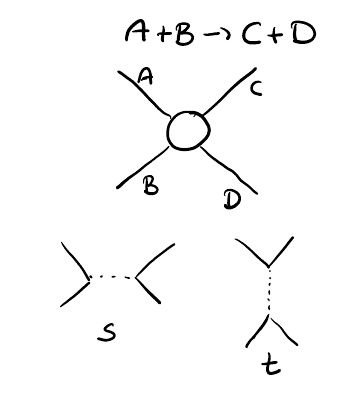
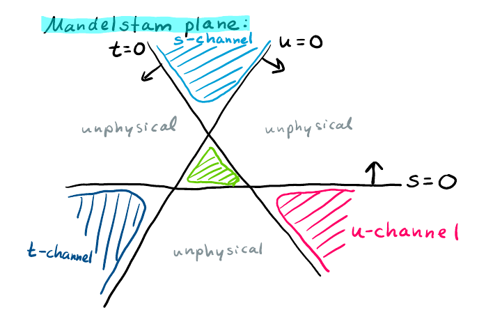
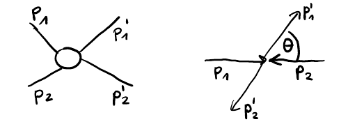
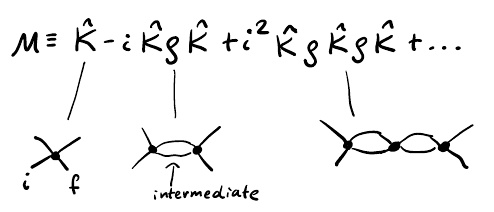
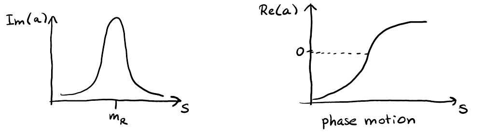
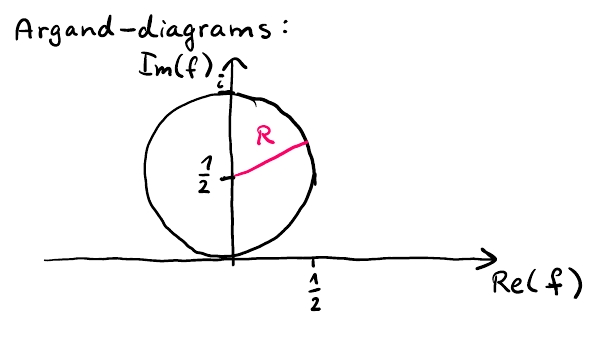
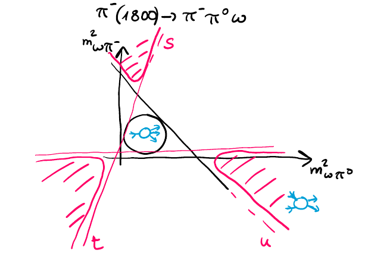
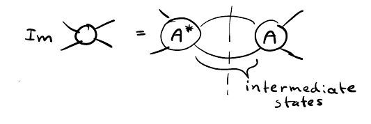
The lecturer begins by recapping with three questions. Look at the problems to recap the material from the previous lecture. Five minutes to think, then discussion.
1.1.1 Recap Questions
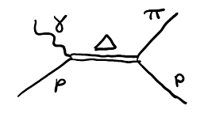
Q: Which interaction is responsible for the decay \Lambda \to p \pi^- ? Is isospin conserved? Is parity conserved? Is angular momentum conserved?
Q: Demonstate that the rotations discussed last time are not different from isospin rotations — they are all represented by an SU(2) group. For example, a 30‑degree isospin rotation about the y -axis acts on an isospin state as
R_y(\theta) |I,m\rangle = \sum_{m'=-I}^{I} d^I_{m'm}(\theta) |I,m'\rangle,\qquad d^I_{m'm}(\theta) = \langle I,m'| e^{-i\theta I_y} |I,m\rangle.
What is the 30‑degree isospin rotation about the y -axis, and how does it act on the \Delta^+ state?
Q: I gave you a Dalitz plot, and you could figure out which particle decays.
1.1.2 Discussion of Question 1: Weak Interaction and Flavor Change
The answer to the first question: weak interaction is responsible for \Lambda \to p \pi^- . This is because there is a flavor change — the \Lambda contains a strange quark, and the final state ( p, \pi^- ) has no strange quarks. Weak interaction always changes flavor.
This example contrasts with a scenario often discussed in the context of neutron stars:
In neutron stars, one might argue that a neutron‑neutron collision produces a \Lambda and neutrons — that involves a flavor change. However, weak interaction is too weak to act in such a production process. If flavor changes are seen in a strong medium, it indicates a mistake (e.g., missing kaons must have been present). Weak interaction is only relevant for decays of ground‑state baryons, like the \Lambda .
| Process | Interaction | Flavor change? | Remark |
|---|---|---|---|
| \Lambda \to p \pi^- | Weak | Yes | Decay of a strange baryon |
| Neutron‑neutron collision → \Lambda + neutrons | Strong (if it occurred) | Yes (implausible) | Would require flavor change in production — impossible for strong interaction; weak is too weak |
Key point: For decay processes, weak interaction is present for most ground‑state baryons. Most of them decay weakly.
2 Weak Decays and Conservation Laws in a Dalitz Plot Analysis
2.0.1 Parity Conservation
On the left side, the proton has J^P = \frac12^+ and the pion has 0^- . Parity is conserved through angular momentum. The required orbital angular momentum is L = 1 . That works, so the process can proceed as a parity-conserving one. However, parity is not conserved in that decay because it also happens in S -wave ( L = 0 ). The sensitivity to the polarization of the \Lambda in this decay arises from two components: a parity-conserving and a parity-violating one.
In weak decays, parity is always broken. It does not have to be 100% broken — in this case, 99% proceeds as a parity-conserving reaction, but there will always be a small fraction (e.g., 1%) of the parity-violating part. So weak decays do not conserve parity; they violate it.
2.0.2 Angular Momentum Conservation
Angular momentum is always conserved in hadron physics and particle physics. This follows from Lorentz group symmetry. If you do not violate Lorentz symmetry, angular momentum is always conserved. You make it conserved by including orbital angular momentum; there is no violation of the Lorentz feature.
2.0.3 Isospin Conservation
Isospin is not conserved. How do we see that it is not conserved?
| Particle | Isospin ( I ) | Multiplicity | Charge Partners |
|---|---|---|---|
| \Lambda | 0 | 1 | singlet |
| p | \frac12 | 2 | p , n |
| \pi | 1 | 3 | \pi^+ , \pi^- , \pi^0 |
For the transition \Lambda \to p \pi , combining a vector of length \frac12 (proton) with a vector of length 1 (pion) cannot yield 0 (the isospin of the \Lambda ). Therefore isospin is broken. This is a property of the weak interaction: isospin is always broken, either severely or a little bit, just as for parity.
2.0.4 Identifying the Decaying Particle in the Dalitz Plot
The final state contains three particles: p , K^- , and \pi^+ . The initial state contains one particle. Thus it is a 1 \to 3 decay, represented on a Dalitz plot. The axes are:
On the Dalitz plot:
- A horizontal band corresponds to a \Lambda resonance decaying into p K^- .
- Vertical bands correspond to K^* resonances decaying into K \pi .
The decay is \Xi_c^+ \to p K^- \pi^+ .
How to find the mother particle? Compute the mass from the phase-space boundaries. The maximum on the x axis is (M_0 - m_\pi)^2 , the minimum is (m_K + m_\pi)^2 . On the y axis, the maximum is (M_0 - m_p)^2 , the minimum is (m_p + m_K)^2 . Taking the square root of the highest value and adding the mass of the pion (or the proton) gives M_0 \approx 2.6 GeV. Then look in the PDG for a particle with that mass.
Quark content analysis:
- Proton: uud
- K^- : s\bar{u}
- \pi^+ : u\bar{d}
The u\bar{d} pair can come from the vacuum. That leaves uds as the core quark content — so the decaying particle could be a pentaquark decaying strongly, or a weak decay. In fact, it is the weak decay of the \Xi_c^+ .
A student suggested a strong decay to \Sigma^+ \pi^+ . However, isospin could be conserved there: \Sigma^+ has I = 1 , proton I = \frac12 , K $I = , pion I = 1 ; combining and and 1$ can give 1 . Nevertheless, the actual identification comes from the \Xi_c angular analysis.
3 Isospin Rotations and D‑Functions for the Delta Baryon
Isospin operators on the \Delta^+
The squared isospin operator acting on the \Delta^+ gives J(J+1) . For the \Delta^+ , J = \frac32 , so
J^2 |\Delta^+\rangle = \frac{3}{2}\cdot\frac{5}{2} |\Delta^+\rangle = \frac{15}{4} |\Delta^+\rangle.
Thus the first statement is true.
The isospin projection I_Z on the \Delta^+ gives I_Z = \frac12 . The \Delta^+ belongs to the isospin multiplet with four states:
| State |J,M\rangle | Particle | I_Z |
|---|---|---|
| |\frac32,\frac32\rangle | \Delta^{++} | +\frac32 |
| |\frac32,\frac12\rangle | \Delta^{+} | +\frac12 |
| |\frac32,-\frac12\rangle | \Delta^{0} | -\frac12 |
| |\frac32,-\frac32\rangle | \Delta^{-} | -\frac32 |
Because these states are eigenstates of I_Z , acting with I_Z on the \Delta^+ yields \frac12 :
I_Z |\Delta^+\rangle = \frac12 |\Delta^+\rangle.
Hence that statement is also true.
Rotation by 30^\circ about the y -axis
Under a rotation, a state |J M\rangle transforms according to SU(2). Applying a y -rotation of 30^\circ to the \Delta^+ state |\frac32,\frac12\rangle produces a linear combination of all \Delta states:
R_y(\theta)\,|\tfrac32,\tfrac12\rangle = \sum_{m'} D^{3/2}_{m', \tfrac12}(\theta)\,|\tfrac32, m'\rangle,
where D^{3/2}_{m', \tfrac12}(\theta) are Wigner D -functions (tabulated in the PDG Clebsch‑Gordan tables).
For example, D^{3/2}_{1/2,1/2}(30^\circ) involves a minus sign, a factor of \sqrt{3}/2 , terms with 1+\cos\theta , and a sine term. Squaring and summing all coefficients (including the last one) gives 1 – probability is conserved. The state becomes a mixture with probabilities given by those coefficients.
This demonstrates that rotations in isospin space are identical to ordinary rotations – both are governed by the unitary group SU(2).
Student question on the D -function coefficient
Q: The last coefficient D^{3/2}_{-3/2,1/2} is not listed anywhere. Is it the same as D^{3/2}_{1/2,1/2} ? I think parity relations are listed.
A: Excellent question. The needed coefficient can be obtained via the symmetry relation for D -functions:
D^{j}_{-m,-m'}(\theta) = (-1)^{m-m'}\, D^{j}_{m,m'}(\theta).
Thus D^{3/2}_{-3/2,1/2} can be related to D^{3/2}_{-1/2,3/2} by swapping indices and inserting a minus sign. (Because of unitarity, these two are actually the same.) If after applying this you still cannot find a listing, the coefficient appears in the Clebsch‑Gordan table provided in the homework.
There is yet another relation: for a negative rotation, complex‑conjugate and transpose the D -function (transposition means swapping the indices). That relation is easy to remember: transpose and change the sign of the rotation angle. Are you satisfied with this?
4 Helicity Formalism for Cascade Decays
4.1 Helicity Formalism: From Two-Body to Cascade Decays
Today’s lecture applies the helicity formalism to compute amplitudes for decays with spin. We will move from a two-body decay to a general cascade, and along the way distinguish model assumptions from exact kinematic results.
For every step, ask: Is this a general statement or a modeling assumption? The angular functions are exact; factorization into vertex blocks is a model.
4.1.1 Reminder: Two-Body Decay
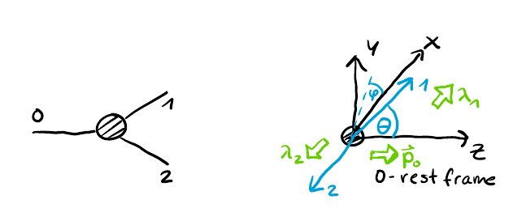
Consider a particle of spin j_0 decaying into two particles with spins j_1, j_2 . In the rest frame of the decaying particle, the spin is quantised along the z ‑axis. The final state is described by helicity states |\lambda_1\rangle and |\lambda_2\rangle . The matrix element depends on:
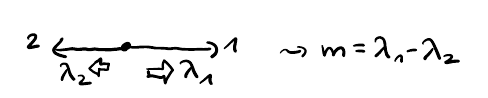
- the masses (through the reduced matrix element),
- the helicities \lambda_1, \lambda_2 ,
- the spherical angles (\theta,\phi) of one decay product.
Since the two particles go back‑to‑back, only one set of angles is needed. The angular dependence is given by a Wigner D -function. The amplitude reads:
\mathcal{M}^{m_0}_{\lambda_1 \lambda_2}(m_0, m_1, m_2, \varphi, \theta) = D^{j_0\,*}_{m_0,\;\lambda_1-\lambda_2}(\varphi,\theta,0)\; H_{\lambda_1 \lambda_2}
where the reduced matrix element is
H_{\lambda_1 \lambda_2} = \langle p_2, j_1 \lambda_1 | \otimes \langle p_2, j_2 \lambda_2 | \hat{T} | j_0, \lambda_1-\lambda_2 \rangle
and does not depend on angles. The D -function follows the Z‑Y‑Z Euler‑angle convention: R_Z(0) then R_Y(\theta) then R_Z(\phi) . Explicitly, for a rotation that brings a particle aligned with the z ‑axis to spherical angles (\theta,\phi) , we have
D^{j_0\,*}_{m_0,\Delta\lambda}(\varphi,\theta,0) = e^{-i m_0\varphi}\; d^{j_0}_{m_0,\Delta\lambda}(\theta).
The little d -function appears in standard tables alongside Clebsch‑Gordan coefficients. The conjugation arises because we use active rotations on the final state.
4.1.2 Extension to Cascade Decays
The same building blocks can describe a decay chain. Consider a reaction with an intermediate resonance: particle 0 decays into three particles (1,2,3) via an intermediate state |j,\lambda\rangle that itself decays into particles 1 and 2.
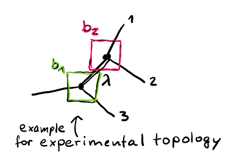
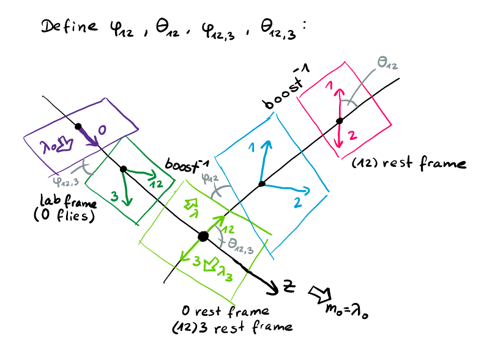
(see Figure 9) (see Figure 14) (see Figure 4) (see Figure 8)
4.2 Factorization as a Model Assumption
The amplitude is split into two vertex parts and a propagator:
- The first vertex: 0 \to 3 + \text{(intermediate)}
- The second vertex: intermediate \to 1 + 2 (see Figure 1)
This splitting (factorization) is a model; the angular functions remain exact. The intermediate state carries a helicity \lambda that will be summed over. (see Figure 2)
4.3 Index and Angle Convention
To keep track of the many angles, we adopt a systematic labeling:
| Decay level | Particles involved | Angle symbols | D‑function indices |
|---|---|---|---|
| First decay (0 → 1+2+3) | 0 → 3 + (12) | \theta_{123},\phi_{123} | D^{j_0\,*}_{m_0,\lambda}(\phi_{123},\theta_{123},0) |
| Second decay (12 → 1+2) | (12) → 1 + 2 | \theta_{12},\phi_{12} | D^{j\,*}_{\lambda,\;\lambda_1-\lambda_2}(\phi_{12},\theta_{12},0) |
The helicity \lambda of the intermediate resonance appears as the second index of the first D and as the first index of the second D .
4.4 Constructing the Cascade in Practice
From lab to 0 rest frame – Boost particle 0 along its direction of motion. In this frame the quantisation axis is the z ‑axis (the boost direction). The three final particles are back‑to‑back. The spherical angles of the 1+2 system are (\theta_{123},\phi_{123}) .
From 0 rest frame to (12) rest frame – Boost the 1+2 system along its direction of motion. Then particle 1 and 2 go back‑to‑back. In the (12) rest frame, the angles of one of them (say particle 1) are (\theta_{12},\phi_{12}) .
In an experimental analysis, one starts with the four‑vectors of particles 1,2,3 in the lab. Using active rotations:
- Determine the spherical angles of the 1+2+3 combination. Rotate so that the 1+2+3 vector points along +z . Boost to the 0 rest frame.
- Within that frame, obtain the angles of the 1+2 system. Rotate so that the 1+2 vector aligns with +z . Boost to the (12) rest frame.
- Finally, apply the necessary rotations to obtain (\theta_{12},\phi_{12}) .
4.5 Full Cascade Amplitude
Putting everything together, with a propagator P^{j^2}(m_{12}^2) for the intermediate resonance:
\mathcal{M}^{m_0}_{\lambda_1 \lambda_2 \lambda_3} = \sum_{\lambda} D^{j_0\,*}_{m_0,\lambda}(\varphi,\theta,0) \; H_{\lambda_3 \lambda} \; \times \; D^{j\,*}_{\lambda,\lambda_1-\lambda_2}(\varphi_{12},\theta_{12},0) \; H_{\lambda_1 \lambda_2} \; P^{j^2}(m_{12}^2).
The sum over \lambda enforces angular‑momentum conservation at the intermediate vertex. The angles are specific to each decay, and the reduced matrix elements H depend only on masses and spins.
5 Helicity Quantization and Partial-Wave Expansion in Three-Body Decays
5.0.1 Helicity Formalism: Caveats and Simplifications
The topology drawn is not the only one possible. One can imagine the same transition proceeding through the combination of particles 2 and 3, or 3 and 1, and one would write the same expression.
Before proceeding, we discuss that expression, because there are caveats and things to note. (see Figure 13)
5.1 Main Caveat: Helicities from Different Rest Frames (see Figure 10)
The main caveat is that the helicities appearing in the expression are taken from different rest frames. To apply the helicity formalism and replace an expectation value by a reduced matrix element (the helicity coupling), we need to be in the rest frame of the particle. Therefore, the values of \lambda that appear are taken in the rest frame of the pairs.
Helicity is affected when you boost not along the quantization direction, but off it (as seen in a previous homework). Therefore, it would be preferable to write the amplitude with all \lambda defined in the same frame. That would be \lambda_1, \lambda_2, \lambda_3, \lambda_0 in the same frame, and one would get a linear combination of amplitudes. The fact that helicities are defined in different frames is considered bizarre.
The only reason we do not use the formalism presented here literally is that we do not care about the \lambda themselves — we are going to sum them up once we add things together. The consistency of the quantization axis is not a concern unless you are dealing with coherent processes that use different quantization axes.
What is important is on which axis the spins in this matrix element are quantized. \lambda_0 comes from the lab frame — it is helicity in the lab frame. That is fine. As soon as we take the square of the matrix element and sum over helicities, we do not care which axis we quantize them on — they will be summed and averaged anyway. But if we want to add this amplitude to something else, for example, an expansion in a different topology, we must be careful with the helicity phases.
First important note: Watch your helicity quantization axis.
5.2 Factorization Assumption and Model Dependence (see Figure 11)
Second important note: In this approach we are implicitly assuming factorization — the vertices are factorized. Usually this is a very good assumption, especially for a narrow resonance. Even for a broad resonance that drives the dynamics in the 1 –$2 $combination, it is a good assumption. One would not assume factorization if you join these two terms in another way.
The Wigner$ D$-functions here are a property of rotations — they are not model assumptions. Lorentz symmetry is a good symmetry, so these functions must be present.
If we take the matrix element without the factorization assumption, use the propagator, and join it into something that requires theory input, the resulting expression is model-independent for the matrix element. (see Figure 12) It is safe to pull out the rotational functions; it is not safe to break them.
5.3 Angular Dependence from Helicity Formalism
What we have done is found explicitly what the angular dependence would be if a particle with spin J is present in the combination. The helicity formalism is a simple way to identify the dependence of the matrix element on the angles. The spin of particles 1 and 2 is not given directly by the angular dependence form — the form gives the appropriate angles, but dealing with spin is more complicated.
5.4 Reducing to the Scalar Case (see Figure 5)
Let us reduce the situation to scalar particles: a scalar particle decaying to three scalar particles. Call this the scalar case. The matrix element in that case has no indices, but it still depends on the dynamical variables. In the general helicity amplitude expression
\mathcal{M}^{m_0}_{\lambda_1\lambda_2\lambda_3}=\sum_\lambda D^{j_0*}_{m_0,\lambda}(\varphi,\theta,0)H_{\lambda_3\lambda}D^{j*}_{\lambda,\lambda_1-\lambda_2}(\varphi_{12},\theta_{12},0)H_{\lambda_1\lambda_2}P^{j^2}(m_{12}^2)
there are no values for \lambda except zero. A spin-zero state has a single state in its multiplet, and under rotations it must transform through the states of the multiplet; the only thing that can happen is a phase modification, but there are no possible \lambda values except zero. Therefore, this term gives \delta_{\lambda,0} , which we can propagate further and then replace.
The expression becomes very simple:
\mathcal{M} = \sum_\lambda D^{0*}_{0,\lambda}(\varphi_{12,3},\theta_{12,3},0) H_{\lambda,0} D^{j*}_{\lambda,0}(\varphi_1,\theta_1,0) H_{00} P(m_{12}^2) = \delta_{\lambda,0}.
The matrix element in that case does not depend on any angles except one polar angle. In the rest frame of the two-particle system, all other angles drop out; only one angle remains. The convenient way to write this is to move towards matching the expression to the partial-wave expansion series that you see in the homework. That is why we pulled the terms related to the helicity couplings and the reduced matrix element into the function X and introduced the (2J+1) coefficient in front.
We started by writing the matrix element for a decay proceeding through a resonance of spin J , and found that the angular dependence is given by d^J_{00}(\Theta) , which are in fact Legendre polynomials P_J(\cos\Theta) . I want to match this to the general technique of analyzing the matrix element by expanding it in a series of Legendre polynomials. The coefficients in this expansion depend only on the mass variable, and they represent the dynamics corresponding to a specific J of the resonance. We started from a model, but it gives us interpretation and intuition.
5.5 Partial-Wave Expansion
The total matrix element in the scalar transition depends on only two variables: the scattering angle and the mass. That is what we also see in the Dalitz plot — two variables: the mass of one subsystem and the mass of the second subsystem. This dependence can be explored by analyzing the coefficients in the partial-wave expansion. The expansion is an exact representation; as soon as you truncate the series, it becomes an approximation.
The partial-wave expansion for the scalar case is
\mathcal{M} = \sum_{j=0}^\infty \sqrt{2j+1} \, d^j_{00}(\Theta_{12}) X_i^j(m_{12}^2)
or equivalently, for the S –$T $amplitude,
A(s,t) = \sum_{J=0}^\infty (2J+1) a_J(s) P_J(\cos\Theta).
In experiment, we often use a truncated partial-wave series because we can attach a physical intuition to each term: every term corresponds to a particle with spin J . High spins are not abundant — the PDG shows few particles with high J , and the amplitude with high J is suppressed. That gives a natural limit to the expansion. We do not know particles with spin greater than six — a_6(2450) exists, but no a_7 , although such states exist in the quark model (by combining currents you can make spin-7 and spin-10 particles). Experimentally they have never been observed. The reason is simple: they lie very high in the excitation mass spectrum and are very broad, so they are difficult to observe and their effect is small. Practically, we truncate the series at J=6 ; nothing higher has ever been seen.
6 Modeling Dalitz Plot with Helicity Formalism and Resonance Identification
6.0.1 Modeling the Dalitz Plot with Helicity Formalism (see Figure 12) (see Figure 2)
The final topic is modeling the Dalitz plot distribution for the decay \Xi_c \to p K^- \pi using the helicity formalism. (see Figure 10) (see Figure 11) (see Figure 13) (see Figure 4) (see Figure 8)
6.1 Focus on dynamics, not borders (see Figure 9) (see Figure 1) (see Figure 3)
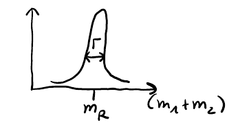
(see Figure 7)
All inhomogeneities within the phase space are driven by physics: either by resonances that produce bumps, or by structure within the bands that reflect spin and angle distributions. (see Figure 5) The helicity formalism encapsulates these effects.
6.2 Input for the helicity formalism
The amplitude can be expressed as:
\mathcal{M}^{m_0}_{\lambda_1\lambda_2\lambda_3}=\sum_{\lambda} D^{j_0*}_{m_0\lambda} H_{\lambda_3\lambda} D^{j*}_{\lambda,\lambda_1-\lambda_2} H_{\lambda_1\lambda_2} P(m_{12}^2)
Application requires:
- the spins of all particles (known),
- the reduced matrix elements,
- a choice for the propagator P(m_{ab}^2) .
We adopt the isobar model and parameterize the propagator with the Breit–Wigner formula:
a(m_{ab}^2)=\frac{g^2}{m_R^2-m_{ab}^2-ig^2\mathcal{S}(m_{ab}^2)}
Thus only the mass, width, and spin J of each resonance are needed.
6.3 Identifying resonances in the decay \Xi_c \to p K^- \pi (see Figure 6)
The two‑particle combinations produce characteristic structures in the Dalitz plot. The axes of the Dalitz plot are scaled as squared invariant masses ( m^2 ), so resonance masses appear squared; for example, \Lambda(1520) appears at 1.52^2 \approx 2.3\ \mathrm{GeV}^2 , not at 1.52 GeV.
| Two‑particle system | Appearance in Dalitz plot | Identified resonance(s) | J^P |
|---|---|---|---|
| K\pi | Horizontal band | K^*(892) , a second K^* around 1.4 GeV | 1^- |
| Kp | Vertical band(s) | \Lambda(1520) , \Lambda(1690) | 3/2^- |
| p\pi | Diagonal line | \Delta(1232) | 3/2^+ |
The K^*(892) is the first radial excitation, analogous to the \rho in the strange sector. It has zero orbital angular momentum between the s and \bar{u} quarks; the spin wave function gives spin 1 because the spins of the quarks are flipped. There is an additional K^* resonance around 1.4 GeV, visible as a second horizontal band. The \Lambda(1520) and \Lambda(1690) belong to the P multiplet, with orbital angular momentum between the quarks. \Lambda(1405) appears as a threshold enhancement near the low‑mass corner. Six further \Lambda states are not visually prominent.
6.4 General expansion in partial waves
The full amplitude is the sum over all two‑particle subsystems ab , each expanded in terms of partial waves:
M = \sum_{ab} M_{ab},\qquad M_{ab} = \sum_i \mu_{ab}^i, \qquad \mu_{ab}^i = \sqrt{2j+1}\, d_{00}^j(\Theta_{ab}) \, X_{ab}^i(m_{ab}^2)
Here d_{00}^j(\Theta_{ab}) is the Wigner d -matrix element and X_{ab}^i contains the Breit–Wigner factor.
If the decay products are not all spin‑less, the quantization axes for different decay chains are not aligned. For the \Xi_c \to p K^- \pi decay, the proton has spin, so blindly applying the helicity formalism for separate chains without proper axis transformation will yield incorrect results. The formula given above is correct only if all final particles are scalars.
6.5 Summary of practical steps
- Look up the known spins and resonance parameters (mass, width, J^P ) of the isobars from the PDG.
- Use the helicity‑formalism amplitude with the Breit–Wigner propagator for each resonance.
- Correctly handle the spin quantization axis for the proton — this is nontrivial and must be done consistently across all decay chains.